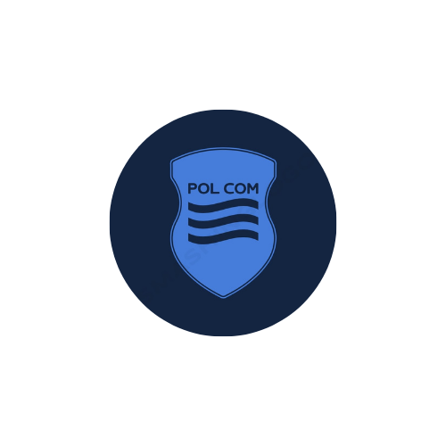

Metodická příručka pro lektory
Vedení aktivit ve vzdělávacím portálu projektu POLCOM
Rozšířená verze (metodický standard)
ÚNOR 2026

1. Účel příručky a kontext projektu POLCOM
Tato metodická příručka je praktická opora pro lektory, kteří pracují s aktivitami ve vzdělávacím portálu projektu POLCOM. Smyslem je pomoci lektorům rozhodovat se během výuky profesionálně ve smyslu co zvolit, kdy přidat strukturu, kdy naopak otevřít prostor, jak podpořit učení ve skupině s rozdílnou zkušeností a motivací a další důležité metodické principy. Příručka stojí na předpokladu, že účastníci se učí nejlépe tehdy, když rozumí smyslu, mají možnost zkoušet, reflektovat a přenášet poznatky do praxe.
Portál POLCOM chápeme jako souhrn ověřených metod a aktivit. O tom, zda se z nich stane skutečné učení rozhoduje až facilitace a to jak nastavíte vzdělávací rámec. Dále je pak klíčové, jak vedete práci ve skupině a také jak kladete otázky při reflexi Proto se příručka soustředí na lektorské dovednosti, práci se skupinovou dynamikou a metodické řízení procesu.
1.1 Jak s příručkou pracovat
- Používejte ji jako checklist a jako inspiraci k úpravám aktivit před školením.
- U každé aktivity se ptejte: Jaký je vzdělávací cíl? Jak poznám, že se cíl naplnil? Jaký má být transfer do praxe?
- Nebojte se drobných změn v zadání, délce nebo formátu, pokud zachováte vzdělávací záměr.
- V online/hybridním prostředí pracujte více explicitně: co je naživo samozřejmé, musí být v digitálním prostředí ještě lépe popsáno.
1.2 Role lektora
V projektu POLCOM lektor typicky střídá tři role: 1) odborný garant obsahu 2) facilitátor skupinového učení a 3) designér učební zkušenosti. Přepínání mezi rolemi má být na vědomé bázi. Účastníci potřebují vědět, kdy předáváte expertízu a kdy naopak držíte proces, aby si poznatek získali sami.
- Expert: krátké jasné vstupy, přinášejí odbornost, rámec nebo pojmy pro společnou práci.
- Facilitátor: směřuje skupinu, drží strukturu diskuze, podporuje rovnováhu v zapojení účastníků, kultivuje bezpečný prostor a orientuje skupinu na cíl.
- Metodik: volí metodu, formát a tempo, aby učení bylo efektivní (ne jen zábavné). Vždy myslí na záměr a vzdělávací cíl tématu a aktivity.
2. Metodické pilíře: co podporuje učení
Níže jsou pilíře, které se v praxi osvědčují napříč tématy. Nejde o teorii pro teorii - každý pilíř má přímý dopad na to, zda aktivita bude „odškrtnutá“, nebo zda se promění v dovednost a změnu chování.
2.1 Relevance a motivace
Dospělý účastník investuje pozornost selektivně. Pokud nevidí přínos, aktivita mu připadá jako hra. Proto vždy explicitně propojte aktivitu s realitou účastníků: s jejich rolí, situacemi a důrazem na efektivitu.
- Začněte konkrétním problémem z praxe (situace, dilema, případ), teprve potom přidejte model nebo pojem.
- Nepředpokládejte stejnou motivaci ve skupině. Nabídněte více variant: efektivita, vztahy, bezpečí, výkon, kvalita.
- Vnímejte odpor jako informaci: účastník často brání svůj čas, kompetenci nebo identitu.
2.2 Bezpečné prostředí a psychologická bezpečnost
Psychologická bezpečnost není „pohoda“. Je to dohoda, že ve skupině lze zkoušet, dělat chyby, ptát se a nesouhlasit bez zesměšnění. V aktivitách, kde účastníci vystupují z komfortní zóny (role-play, sdílení zkušeností, zpětná vazba), je to předpoklad učení.
- Jasná pravidla komunikace (kontrakt) jsou silnější než obecná prosba o respekt.
- Normalizujte chybu jako zdroj dat: „Zkoušíme, co funguje. Chyba je informace, ne selhání.“
- U citlivých témat dejte možnost volby míry sdílení a právo účastníka odmítnout aktivní roli.
2.3 Struktura, která uvolňuje kapacitu
Častá chyba je buď přestrukturovanost (účastníci pouze plní instrukce), nebo naopak volnost bez rámce (ztrácí se čas, hlasití účastníci přebíjí tiché ). Zkušený lektor pracuje se strukturou jako s nástrojem - podle potřeby přidává nebo ubírá.
- U jasných dovedností přidejte více kroků a praktickou ukázku (demonstraci).
- U komplexních témat držte cíl a čas, ale nechte skupinu hledat cestu (facilitovaná diskuze, případová práce).
- Vždy zakončete ukotvením: co z toho je „použitelné v pondělí ráno“.
2.4 Cyklus zkušenostního učení
Většina aktivit v portálu implicitně stojí na zkušenostním učení: Účastník něco zažije, popíše, pojmenuje, zpracuje a rozhodne se, co změní. Bez reflexe a transferu zůstane pouze zážitek.
- Zážitek (aktivita): účastníci něco dělají, řeší, simulují.
- Zpětný pohled/ Reflexe : co se stalo, co jsme viděli, jaké vzorce se objevily.
- Pojmenování a zobecnění: proč se to dělo, jaké to má souvislosti s teorií/modely.
- Transfer: co z toho použiji v praxi, v jaké situaci a jak poznám, že to funguje.
3. Příprava školení: od cíle k aktivitám
Kvalitní facilitace začíná před školením. Příprava není jen „nachystat materiály“. Je to didaktické rozhodování: co přesně má být výsledkem, jak k tomu skupinu dovést a jak si ověřit, že se to opravdu stalo.
3.1 Definice vzdělávacího cíle
Cíl popisuje změnu u účastníka. Doporučení je pracovat se třemi rovinami: znalost (vím), dovednost (umím), postoj/strategická volba (chci / dávám prioritu). V praxi nejvíc selhávají cíle, které jsou příliš obecné (např. „zlepši komunikaci“).
- Formulujte cíl jako pozorovatelné chování: „Účastník dokáže…“, „Účastník umí použít…“, „Účastník zvolí…“.
- Zvažte úroveň: vysvětlit - analyzovat - aplikovat - vytvořit. Ne každé školení má mířit na nejvyšší úroveň, ale musí to být vědomý proces.
- Předem si napište 2-3 indikátory, podle kterých poznáte naplnění cíle (výstup, rozhodnutí, kvalitní argument, změna postupu).
3.2 Výběr aktivit a jejich návaznost
Aktivity vybírejte podle cíle, ne podle atraktivity. Dobrá skladba má logiku: od lehčího k náročnějšímu, od bezpečného sdílení k exponovaným situacím. Zvažte také, jak se budete k tématu vracet v různých formátech - stejný koncept lze procvičit nejprve v malých skupinách (dvojice, trojice), potom v simulaci a nakonec v plénu.
- Začátečníci: více struktury, kratší kroky, častější kontrola porozumění, jasné příklady.
- Pokročilí: více otevřených úloh, práce s dilematy, komplexní případové studie, reflexe hranic a etických aspektů.
- Heterogenní skupina: připravte varianty obtížnosti (stejný rámec, rozdílná hloubka úkolu).
Metodická poznámka: Pokud máte v programu víc aktivit na podobný cíl, raději jednu proveďte opravdu do hloubky (včetně reflexe), než dvě „na půl“. Transfer se děje v tiché práci a rozhodnutí, ne v rychlém střídání.
3.3 Diagnostika skupiny a vstupní informace
Čím víc víte o skupině předem, tím méně budete improvizovat pod tlakem. Užitečné je krátké zjištění: kdo jsou účastníci, co řeší, co už zkoušeli a co očekávají. Diagnostika nemusí být formální dotazník - někdy stačí telefonát s objednavatelem nebo krátký pre-work.
- Zkušenost a role: v jaké roli účastník dané dovednosti používá (vedoucí, specialista, koordinátor, dobrovolník..).
- Kontext: jaké situace jsou pro ně nejčastější a nejvíc zatížené (konflikt, tlak na čas, veřejná komunikace..).
- Motivace a obavy: co chtějí získat a čeho se bojí (hodnocení, vystupování, „ztrapnění“).
- Logistika: čas, prostředí, technika, jazyk, případná specifická omezení (zdravotní, přístupnost).
3.4 Materiály, prostor a přístupnost
Prostor a materiály nejsou jen „technické“. Přímo ovlivňují interakci. Dřív než připravíte pomůcky, zvažte, jak má probíhat komunikace: plénum, malé skupiny, páry, pohyb v prostoru, práce na flipchartu aj.
- Diskuze: kruh nebo U, aby se lidé viděli; lektor stojí mimo střed, aby nedržel moc.
- Týmová práce: malé stoly, flipcharty u skupin, jasně označené materiály pro každou skupinu.
- Bezpečí a přístupnost: průchodnost prostoru, možnost se posadit stranou, dostupnost pro osoby se specifickými potřebami.
- Vizualizace: připravte si systém, jak budete zachytávat výstupy (flip, tabule, sdílený dokument, online nistroje jako mentimeter, miro, kahoot, online tabule nebo aplikace na myšlenkové mapy).
3.5 Online vs hybridní mód: technika jako didaktický faktor
V online prostředí se „prostor“ mění na virtuální učebnu a pravidla práce se mění . Klíčová je zde předvídatelnost: účastník musí vědět, kde se co děje, jak se hlásí, kde najde materiály a jak bude probíhat práce ve skupinách. Technické rozptýlení rychle snižuje pozornost.
- Zkontrolujte stabilitu připojení, mikrofon a kameru; mějte záložní zařízení nebo alespoň mobilní hotspot.
- Dopředu si připravte odkazy, sdílené dokumenty a šablony. Nenechávejte tvorbu struktury „na živé“.
- U breakout rooms nastavte jasný úkol, čas a očekávaný výstup. V každé skupině určete facilitátora a zapisovatele.
- Počítejte s kratšími bloky (typicky 60-90 minut) a častějšími mikro-pauzami.
3.6 Časový plán a scénář (včetně rezerv)
Časový plán je nástroj řízení energie. Doporučuje se plánovat ve třech vrstvách: (1) minimální varianta - když se zpozdíte, (2) standardní varianta a (3) rozšířená varianta - když skupina jede rychle a chce jít do hloubky. Připravte si ideálně přesný harmonogram (minutovník).
- Úvod a rámec: 10-15 % celkového času (rychlý úvod, ale kvalitní nastavení).
- Aktivity: 50-60 % času (Klíčový je zážitek, práce ve skupinách, zkoušení).
- Reflexe a transfer: 20-30 % času (tuto část nezkracujte, jinak se znehodnotí vše předtím).
- Rezerva: alespoň 10 % času na technické nebo skupinové „nečekané“.
3.7 Plán B: připravené úpravy bez ztráty cíle
Plán B není improvizace na poslední chvíli. Je to sada předem promyšlených variant, které drží stejný cíl, ale mění formu. Doporučuje se u klíčových aktivit mít minimálně dvě varianty: pro málo lidí, pro hodně lidí a pro nedostatek času.
- Změna počtu účastníků: skupiny -> dvojice, nebo naopak dvojice -> trojice; u celé skupiny použijte strukturované kolo s časomírou.
- Zkrácení času: zkraťte sběr příspěvků, ne reflexi; pracujte s prioritizací (například účastníci zmíní jen 3 nejdůležitější body).
- Nízká energie: přidejte pohyb, rychlé hlasování, krátkou individuální přípravu před diskuzí.
- Online výpadek nástroje: připravte „low-tech“ verzi (chat, sdílený dokument, hlasování reakcemi).
4. Úvod školení a vytvoření bezpečného prostředí
Úvod rozhoduje o tom, zda účastníci přistoupí na způsob práce. V prvních 10 minutách si odpovídají dvě otázky: „Je to pro mě relevantní?“ a „Je to bezpečné a smysluplně vedené?“ Pokud úvod nastavíte dobře, ušetříte si pozdější tlak na aktivitu.
4.1 Struktura úvodu, která funguje v praxi
- Přivítání a rámec: krátce představte téma a pravidla spolupráce (ne čtení agendy).
- Relevance: ukažte 2-3 konkrétní situace, kde se téma projeví a co to lidem ušetří/zlepší.
- Kontrakt: jak budeme pracovat, co je v rámci pravidel přijatelné (ptát se, nesouhlasit), co není přijatelné (zesměšňování, přerušování).
- Check-in: krátká otázka, která propojí účastníky s tématem a dá vám rychlou zpětnou vazbu.
- Očekávání: sběr a rychlá práce s očekáváními (co pokryjeme, co ne, co je na přeskupení).
4.2 Práce s očekáváními:
S očekáváními pracujte aktivně. Nestačí je jen sepsat. U každého očekávání se rozhoduje: (a) je v rámci cíle školení, (b) je mimo rámec, nebo (c) je částečně zastoupeno. Transparentní dohoda snižuje pasivní odpor účastníků a zvyšují míru zapojení.
- Naživo: očekávání na kartičky/post-it, seskupení do tematických okruhů, rychlé komentáře.
- Online: očekávání do chatu nebo do sdílené online tabule, lektor vše shrne a naváže na program.
- Vždy pojmenujte co se dnes naučíte a na co třeba čas nebude. V tomto případě nabídněte, kde účastník může informace najít (např. v portálu, v navazujícím modulu).
4.3 Nastavení pravidel spolupráce
Pravidla fungují, když jsou krátká, srozumitelná a mají smysl. Doporučuje se 4-6 pravidel. Pokud chcete, aby lidé používali chat, pracujte s chatem aktivně. Pokud chcete, aby se hlásili, reagujte konzistentně.
- Mluví jeden, ostatní se snaží neskákat do řeči. Nesouhlas je vítaný, útok na člověka ne.
- Každý má právo na možnost přeskočení u osobního sdílení (pokračovat bez vysvětlování).
- Dodržujeme čas: krátké příspěvky, lektor časem pracuje viditelně.
- V online: jak se hlásíme (ručička), kde se ptáme (chat), kam ukládáme výstupy (odkaz).
4.4 Specifika virtuálního prostředí
Ve virtuálu je lektorova role viditelnější. Pokud jste nejasní, skupina se rozpadne do paralelních aktivit. Buďte přesní a explicitní: co teď děláme, jak dlouho, kde je výstup a co bude následovat.
- Komunikujte očekávání kolem kamer a mikrofonů tak, aby dávalo smysl (ne jako příkaz).
- Omezte počet nástrojů: raději jeden sdílený dokument než tři aplikace.
- Pracujte s „mikro-interakcemi“: reakce, rychlé hlasování, otázka do chatu každých 5-10 minut.
- Jmenujte role ve skupinách: kdo hlídá čas, kdo zapisuje, kdo prezentuje.
5. Vedení aktivit: praktický postup a lektorské dovednosti
Aktivita není jen zadání. Z metodického pohledu má vždy čtyři části: (1) rámec a smysl, (2) instrukce a organizace, (3) facilitace během práce, (4) reflexe a ukotvení. Chyby typicky vznikají v přechodech - když lektor přejde k další části bez uzavření té předchozí.
5.1 Rámec: proč to děláme
Rámec nastavujte konkrétně. Místo „uděláme aktivitu na komunikaci“ použijte: „Teď budeme mapovat tři bariéry, které se nám objevují v praxi. Na konci si každý vybere jednu bariéru, na které chce pracovat.“
- Řekněte, co bude výstup (seznam bariér, dohoda, argumenty, plán kroku).
- Řekněte, jak dlouho to bude trvat a jak poznáme, že jsme hotovi.
- Uveďte, jak se výstup použije později (naváže reflexe, další aktivita, úkol v portálu).
5.2 Instrukce: jasnost, stručnost a kontrola porozumění
Instrukce jsou nejcitlivější bod. Příliš dlouhé instrukce vytvářejí kognitivní přetížení a účastníci se ptají na to, co už bylo řečeno. Příliš krátké instrukce vedou k chaosu a ztrátě času. Ideál je jednoduchý postup a možnost se k němu vrátit (viditelně na flipu / ve sdíleném dokumentu).
- Vysvětlujte krok po kroku. Po každém kroku udělejte krátkou pauzu.
- Používejte konkrétní příklad nebo mikro-ukázku (30-60 sekund).
- Nekontrolujte otázkou „Je to jasné?“ - místo toho nechte účastníka zopakovat zadání: „Kdo shrne, co je první krok?“
- U náročných úloh napište instrukce na viditelné místo (flip, slide, chat).
5.3 Organizace práce: skupiny, role, výstupy
U skupinové práce předem určete, jak budete sbírat výsledky. Bez toho se výstupy ztratí a reflexe je slabá. Osobně se vyplatí předem dát roli zapisovatele: zvyšuje to kvalitu práce a lektor má materiál pro shrnutí.
- Velikost skupin: 2-3 pro rychlé sdílení, 4-6 pro tvorbu, 6+ jen s jasnou strukturou (jinak dominují hlasití).
- Role: facilitátor (hlídá postup), zapisovatel (zachytí myšlenky), timekeeper (hlídá čas), prezentující.
- Výstup: 3 body na flipu, 1 slide, 1 odstavec v dokumentu, nebo krátké rozhodnutí (co měníme).
- Kritéria kvality: řekněte, jak poznáte dobrý výstup (konkrétnost, proveditelnost, propojení s praxí).
5.4 Facilitace během práce: kdy zasahovat a kdy ne
Zkušený lektor je během práce přítomný, ale ne „řídící“. Obchází skupiny, poslouchá, pokládá otázky, všímá si vzorců a sbírá data do reflexe. Zásah je vhodný tehdy, když se skupina odchyluje od cíle, když se zasekne nebo když hrozí, že aktivita ohrozí bezpečí.
- Monitoring: poslouchejte 30-60 sekund, teprve potom se ptejte.
- Podporující otázky: „Co je váš cíl?“, „Jaké máte varianty?“, „Co byste udělali v reálné situaci?“
- Minimalizujte „přednášky u skupiny“. Raději položte otázku, která je posune.
- Zapisujte si pozorování a citace - v reflexi pak můžete pracovat s reálným materiálem, ne s abstrakcí.
5.5 Práce s časem a energií
Časové signály nejsou „honění“. Pomáhají lidem dokončit myšlenku. Používejte minimálně dva signály: uprostřed (orientační) a na konci (poslední minuta). U delší práce přidejte i kontrolní bod: „kde jste“.
- Signály: „Zbývá 5 minut“, „poslední 2 minuty“, „dokončete závěr a vyberte mluvčího“.
- Při nízké energii zkraťte práci a zvyšte interakci v plénu (rychlé hlasování, sdílení ve dvojicích).
- Střídejte formáty zhruba každých 20-30 minut, ale ne mechanicky - řiďte se únavou a kvalitou diskuze.
5.6 Uzavření aktivity: reflexe, která dělá záběr
Reflexe není „Co se vám líbilo?“. Je to řízený proces, který zpracuje zážitek do poznatku a rozhodnutí. Praktická struktura, která funguje téměř univerzálně, je: Co se stalo - Co to znamená - Co s tím udělám.
- Co se stalo (fakta): co jsme viděli, co jsme udělali, jaké vzorce se objevily.
- Co to znamená (interpretace): proč to tak bylo, co to říká o našem tématu, jaké jsou souvislosti.
- Co s tím (aplikace): co z toho použiji, jaký krok udělám, co potřebuji, aby to šlo.
Metodická poznámka: Pokud reflexi „odvypráví“ lektor, účastník se nepřipojí k vlastnímu poznání. V reflexi mluvte méně než v zadání. Vaše role je klást dobré otázky, shrnout a ukotvit.
6. Co dělat a co nedělat: doporučení podle typů aktivit
Níže jsou metodická doporučení pro nejčastější typy aktivit. Nejde o rigidní pravidla, ale o prevence typických selhání. U každého typu uvádím i „proč“, protože pochopení důvodu je důležitější než mechanické dodržení.
6.1 Icebreakery a warm-ups
Smyslem icebreakerů není „rozbavit“, ale snížit sociální napětí, zvednout hlas účastníků a vytvořit první zkušenost bezpečné interakce. Nejlépe fungují, když jsou tematicky relevantní.
- Dělejte: propojte otázku s tématem (např. „Jakou komunikační situaci jste naposledy řešili pod tlakem?“).
- Dělejte: nabídněte volbu (mluvit / napsat do chatu / sdílet ve dvojici).
- Nedělejte: povinné osobní odhalování, které může být citlivé (rodina, finance, zdraví).
- Nedělejte: dlouhé kolečko u velkých skupin bez času - vytvoří nudu a odpor.
6.2 Diskuze a kolečko
Diskuze bez struktury často sklouzne k „příběhům“, které jsou zajímavé, ale nepřinášejí učení. Strukturou je myšleno: jasná otázka, čas, pravidlo pro délku příspěvku a způsob, jak zapojíte tiché.
- Dělejte: uveďte konkrétní otázku a čas (např. 7 minut, maximálně 30 sekund na příspěvek).
- Dělejte: pracujte s parafrází a shrnutím - pojmenujte, co se opakuje, a vraťte to skupině.
- Nedělejte: nechte dominovat jednoho člověka. Zasáhněte brzy, slušně a věcně.
- Nedělejte: netlačte tiché k mluvení v plénu; nabídněte nejdřív dvojici nebo psaný vstup.
6.3 Brainstorming
Brainstorming je účinný, když je správně oddělena fáze generování a fáze vyhodnocení. Pokud se začne hodnotit příliš brzy, skupina zchudne na nápady a aktivní zůstanou jen ti nejsebevědomější.
- Dělejte: nejprve sbírejte kvantitu (bez kritiky), teprve potom třiďte a vybírejte.
- Dělejte: začněte tichým psaním (1-2 minuty) - zvýšíte počet nápadů a zapojíte introverty.
- Nedělejte: tolerovat poznámky typu „to nejde“, „to už jsme zkoušeli“ v první fázi.
- Nedělejte: sbírat nápady bez následné prioritizace - účastníci pak nemají pocit výsledku.
6.4 Role-play a simulace
Role-play je jedna z nejsilnějších metod pro nácvik chování, ale také nejvíc ohrožuje bezpečí. Bez rámce se účastníci buď „hrají“, nebo se naopak stáhnou. Potřebují jasné role, cíl a dohodu, jak budeme pracovat se zpětnou vazbou.
- Dělejte: dejte role, kontext a konkrétní cíl (např. „vyjednat“, „odmítnout“, „získat souhlas“).
- Dělejte: definujte pravidla zpětné vazby (popis - dopad - alternativa), a začněte pozitivním pozorováním.
- Dělejte: použijte krátké „stop“ a reset, pokud se situace vyhrotí nebo ztratí směr.
- Nedělejte: nenechávejte improvizaci bez rámce a bez debriefingu.
- Nedělejte: nevystavujte jednoho účastníka „na scéně“ bez podpory - u exponovaných situací pracujte ve dvojicích nebo trojicích.
6.5 Debriefing a reflexe
Debriefing je místo, kde se učí. Pokud ho přeskočíte, účastník si odnese dojem, ale ne pojmenovaný postup. Debriefing se vyplatí plánovat stejně pečlivě jako aktivitu.
- Dělejte: připravte si 5-7 otázek podle struktury fakta - význam - aplikace.
- Dělejte: pracujte s různými formáty (tichý zápis, dvojice, plénum), aby se zapojili i ti, kteří nemluví rádi.
- Nedělejte: hned říct „správné řešení“. Nechte účastníky dojít k poznání, teprve potom doplňte rámec.
- Nedělejte: zakončovat reflexi bez akčního kroku. Alespoň jeden konkrétní závazek zvyšuje transfer.
7. Zvládání náročných a nečekaných situací
Náročné situace nejsou výjimkou. Často nejsou „o lidech“, ale o nenaplněných potřebách: relevance, uznání, bezpečí, kontrola nad časem. Lektor má chránit skupinový cíl i jednotlivce. Klíč je reagovat klidně, včas a s respektem.
7.1 První krok: seberegulace a diagnostika
- Zastavte se na vteřinu. Zpomalte dech. Tím snížíte riziko defenzivní reakce.
- Položte si otázku: ohrožuje to vzdělávací cíl, nebo jen můj komfort?
- Oddělte člověka od chování. Chování popište věcně, bez nálepky („Všiml jsem si, že...“).
7.2 Ochrana skupiny: prevence a jasné hranice
Dobré hranice nejsou tvrdost. Jsou služba skupině. Pokud lektor nechá narušování bez reakce, skupina ztrácí důvěru a tichý odpor roste.
- Vracejte se k pravidlům, na kterých jste se dohodli (kontrakt).
- Používejte „my“ jazyk: „Potřebujeme slyšet víc hlasů.“
- Když je potřeba, udělejte krátkou pauzu nebo změňte formát (dvojice, tiché psaní).
7.3 Typické situace a doporučené zásahy
7.3.1 Technické problémy
- Buďte transparentní: „Mám technický problém, potřebuji 2 minuty.“
- Zadejte smysluplný úkol: diskuse ve dvojicích, tichá reflexe, práce v chatu.
- Mějte zálohu: prezentace v PDF, offline poznámky, možnost pokračovat bez sdílení obrazovky.
- Po vyřešení se vraťte a uzavřete: shrňte, co se stalo, a navazujte plynule.
7.3.2 Dominantní účastník
Dominance může být projevem angažovanosti, ale i potřeby kontroly. Čím déle čekáte, tím těžší je zásah. Základní technika je ocenit obsah a přesměrovat proces.
- Formulace: „Děkuji, to je užitečné. Teď potřebuji dát prostor i dalším - kdo má jiný pohled?“
- Použijte strukturu: časomíra, kolo po jednom, zapisování nápadů nejdřív tichým způsobem.
- Pokud nepomůže: nabídněte roli (např. zapisovatel) nebo řešte individuálně o přestávce.
7.3.3 Nezapojená skupina, nízká energie
Nízká energie nemusí být nezájem. Může to být únava, nejasnost, příliš abstraktní téma nebo strach z hodnocení.
- Diagnostika: rychlý „teploměr“ 1-10 v chatu / zvednutí prstů.
- Změna formátu: přejděte do dvojic, přidejte pohyb, zkraťte vstup, dejte konkrétní případ.
- Zvedněte relevanci: „Kde tohle řešíte zítra v práci? Pojďme na konkrétní situace.“
- Dovolte ticho: někdy lidé potřebují minutu na individuální přípravu.
7.3.4 Tichý účastník
Ticho může znamenat přemýšlení, ne odpor. V praxi se osvědčuje nabídnout nejprve méně exponované formy zapojení.
- Začněte psaním: každý si sepíše 2 myšlenky, teprve potom sdílí ve dvojici.
- V plénu nabídněte volbu: „Kdo chce, přidejte do chatu jednu větu.“
- Individuální kontakt o přestávce: „Co by ti pomohlo zapojit se tak, aby ti to bylo komfortní?“
7.3.5 Konflikt ve skupině
Konflikt je někdy užitečný - ukazuje rozdílné perspektivy. Problém je konflikt osobní, který ohrožuje bezpečí.
- Zastavte dynamiku: „Na chvíli stop. Slyším dva různé pohledy.“
- Parafrázujte obě strany neutrálně a zkontrolujte porozumění: „Rozumím správně, že...“
- Vraťte se k cíli: „Jak nám to pomůže vyřešit situaci, kterou dnes trénujeme?“
- Pokud se konflikt personalizuje: stanovte hranici a případně přesuňte řešení mimo plénum.
8. Hodnocení, reflexe a transfer: aby učení nezůstalo ve třídě
Kvalitní závěr je nejdůležitější část, protože zajišťuje, že se zkušenost promění v trvalé učení. Má tři funkce: vytvoření insightů, prioritizace a transfer do praxe. Přeskakování závěru je nejčastější metodická chyba při skluzu.
8.1 Doporučený čas a struktura uzávěru
Doporučené minimum pro uzávěr je 20-30 minut (u celodenního školení i více). Pokud jste ve skluzu, zkraťte jiné části, ne uzávěr.
- Shrnutí velkého obrazu: co jsme dnes prozkoumali, jak to spolu souvisí.
- Individuální reflexe: každý si sepíše 2-3 klíčové poznatky a jednu otázku.
- Plán akce: jeden konkrétní krok do praxe (co, kdy, v jaké situaci, podle čeho poznám úspěch).
- Check-out: krátká sociální tečka (jedno slovo, jedna věta, vděčnost, největší překvapení).
8.2 Nástroje pro transfer
Transfer podporuje, když účastník udělá malé rozhodnutí a má k němu oporu. Doporučuje se pracovat s principem „malého závazku“ a následného připomenutí (např. v portálu nebo e-mailem).
- Akční plán 1-1-1: jeden krok, do jednoho týdne, v jedné konkrétní situaci.
- Peer závazek: dvojice si navzájem řeknou, co zkusí, a domluví si krátký follow-up.
- Reflexní otázka do praxe: „Kdy jsem dnes použil nový postup? Co to změnilo?“
- Materiál v portálu: doporučte konkrétní modul/aktivitu jako posílení nebo následný trénink.
8.3 Hodnocení kvality a zpětná vazba
Hodnocení není jen dotazník spokojenosti. Má vám dát data pro zlepšování. Doporučuje se kombinovat rychlé formativní signály během školení s krátkým závěrečným sběrem.
- Plus/Delta: co fungovalo, co upravit příště (rychlé, účinné).
- Jedna věc, kterou si odnáším - jedna věc, kterou potřebuji doplnit.
- Krátké sebehodnocení dovednosti (škála 1-5) před/po bloku - ukáže posun.
- U dovedností: pozorování a jednoduchá rubrika (např. struktura argumentu, práce s otázkami, práce s emocí).
9. Profesní standardy lektora v projektu POLCOM
Metodická kvalita stojí i na etice a profesionalitě. To platí zejména tehdy, když školení pracuje s konkrétními případy účastníků nebo s citlivými tématy.
- Důvěrnost: co zazní ve skupině, zůstává ve skupině (pokud není dohodnuto jinak).
- Respekt k diverzitě: různé zkušenosti, role a názory jsou zdroj učení; lektor hlídá, aby se z toho nestalo ponižování.
- Neutralita a férovost: lektor nedává „nálepky“ účastníkům; hodnotí chování a postup, ne osobnost.
- Práce s mocí: lektor si uvědomuje svůj vliv a používá ho k podpoře učení, ne k prosazení ega.
- Přístupnost: dává prostor různým způsobům zapojení (mluvení, psaní, práce ve dvojici).
9.1 Sebereflexe lektora
Lektorská práce je řemeslo. Po každém školení si udělejte krátkou reflexi: co fungovalo, kde skupina ztratila energii, které instrukce byly nejasné, kde jste zasáhli příliš a kde naopak málo. Tato reflexe je nejrychlejší cesta ke zvyšování kvality.
- 3 otázky po školení: Co se povedlo? Co bych udělal jinak? Co si chci příště ohlídat?
- Sbírejte vlastní formulace, které fungují (věty pro přesměrování, pro uzavření, pro shrnutí).
- Pokud můžete, požádejte o peer pozorování (kolega sleduje proces, ne obsah).
10) Práce s citlivým obsahem (incident, trauma, násilí)
10.1 Účel a vymezení
Tato část stanovuje pravidla pro práci s výukovým obsahem, který může být pro účastníky emočně zatěžující (např. násilné trestné činy, nehody se zraněním/úmrtím, domácí násilí, práce s dětmi, hromadná neštěstí, situace s vysokou mírou ohrožení). Cílem je:
- udržet psychologickou bezpečnost účastníků,
- umožnit učení a profesionalizaci bez retraumatizace,
- nastavit jasné hranice sdílení a zpracování kazuistik.
10.2 Zásady bezpečné práce
- Dobrovolnost sdílení
Nikdo není povinen sdílet osobní zkušenost. Sdílení je dobrovolné a nesmí být vynucováno ani nepřímo (např. tlakem skupiny). - Minimalizace detailů a “nevyžadování šokových prvků”
Výuka stojí na analýze rozhodování a postupů, ne na explicitních detailech. Lektor aktivně brání “zacyklení” skupiny v drsných detailech. - Normalizace reakcí
Emoční reakce jsou legitimní. Lektor je pojmenuje a ukotví (“tohle je běžná reakce na těžké téma”) bez psychologizování účastníků. - Pravidlo “STOP–PAUZA–VOLBA”
Účastník má právo kdykoli říct STOP / požádat o pauzu / zvolit jiný způsob účasti (pozorování místo aktivní role, dočasné opuštění místnosti). - Důstojnost osob v kazuistikách
O obětech, podezřelých, pachatelích a zasahujících se hovoří respektujícím jazykem; nepoužívají se dehonestující přezdívky ani bagatelizace.
10.3 Postup lektora při známkách přetížení účastníka
Signály: ztichnutí, třes, pláč, výrazná podrážděnost, odchod, disociace, neschopnost pokračovat.
Doporučený postup:
- Zastavit nebo zjemnit aktivitu, dát pauzu.
- Nabídnout volbu: pozorování / změna role / odchod na chvíli.
- Krátce a soukromě ověřit stav (“Co teď potřebujete, abyste byl/a v bezpečí?”).
- Nepouštět se do terapie, nevyptávat se na detaily.
- Pokud je to nutné, předat na určený podpůrný kontakt (psycholog, peer support, nadřízený dle pravidel organizace).
10.4 Debriefing u citlivých témat
Debriefing vede lektor především:
- k faktům a rozhodnutím (“Co bylo cílem? Jaké informace byly k dispozici? Jaké byly varianty?”),
k profesním principům (bezpečnost, proporcionalita, komunikace, koordinace), - k transferu do praxe (“Co uděláme příště stejně, co jinak, co systémově?”).
11. Hodnocení dovedností a standardizace (rubriky, pozorování, evaluace)
11.1 Účel hodnocení
Hodnocení v rámci zážitkových a scénářových aktivit má sloužit:
- k rozvoji (formativní zpětná vazba),
- k ověření standardu (sumativní posouzení u kritických dovedností),
- k evidenci pro vzdělávací systém (prokazatelnost a srovnatelnost).
11.2 Co hodnotíme
Doporučené kategorie (lze mapovat na interní kompetenční model):
- Rozhodování a taktika (situational awareness, volba variant, řízení rizik)
- Zákonnost, legitimita a proporcionalita (postupy v mezích oprávnění, přiměřenost)
- Komunikace (s kolegy, s veřejností, de-eskalace)
- Koordinace a týmová práce (role, předávání informací, leadership/followership)
- Bezpečnost a sebeochrana (vlastní bezpečí, bezpečí okolí, kontrola prostoru)
- Profesionalita a etika (respekt, nestrannost, práce s mocí)
11.3 Nástroje hodnocení
A) Pozorovací arch (checklist)
- používá se u jasně definovaných kroků/postupů,
- vhodné pro “ano/ne” položky (např. oznámení, vyžádání posil, zajištění prostoru).
B) Rubrika (škála 1–4)
Vhodné pro komplexní kompetence (komunikace, rozhodování).
Doporučené úrovně:
- Nesplňuje očekávání – ohrožuje cíl/bezpečnost/legitimitu, vyžaduje zásah lektora
- Začátečník – splní minimum, ale s významnými rezervami
- Dobrý výsledek – stabilní výkon, drobné rezervy, bezpečné a zákonné
- Výborný výsledek – proaktivní, modelový výkon, jasný transfer do praxe
11.4 Standardizace hodnotitelů
Aby byl výsledek srovnatelný:
- Kalibrace před kurzem
Hodnotitelé si projdou rubriku a sjednotí výklad kritérií (příklady chování pro každou úroveň).
Kotvící příklady
Pro vybrané kompetence vytvořit 2–3 krátké popisy “typického chování” pro úroveň 2/3/4. - Dvojí hodnocení u vysoce důležitých výstupů
U certifikačních částí doporučit dva hodnotitele nebo následnou revizi. - Záznam důkazů
Hodnotitel zapisuje pozorování jako chování (“řekl…, udělal…, rozhodl…”) ne jako dojem (“působil nejistě”).
11.5 Evidence a práce s výsledky
- U formativního hodnocení se vede záznam pro účastníka (rozvojový).
- U sumativního se vede záznam pro systém (splnění standardu).
- Výsledky se používají k identifikaci, toho co nejčastěji selhává → úprava výuky.
Přílohy
A. Checklist přípravy školení
Checklist je rozdělen podle toho, kdy je realistické věci udělat. V praxi výrazně snižuje stres v den školení.
Kdy | Co zkontrolovat | Poznámka |
|---|---|---|
T-7 až T-3 dny | Cíle, skladba aktivit, znalost skupiny (role, zkušenost, očekávání). | Domluvit případové situace. |
T-2 až T-1 den | Materiály, šablony, instrukce na flip/slide, plán B, časový scénář s rezervami. | Připravit si otázky pro reflexi. |
T-0 (před startem) | Prostor/online místnost, technika, rozložení, viditelná pravidla, rozdělení do skupin. | Přivítání, atmosféra, voda/pauzy. |
B. Šablona scénáře aktivity
Šablonu použijte pro klíčové aktivity. Pomáhá udržet cíl a zjednodušuje instrukce.
Fáze | Co dělá lektor | Co dělají účastníci | Čas / výstup |
|---|---|---|---|
Rámec | Pojmenuje smysl, výstup, návaznost. | Naslouchají, ptají se na nejasnosti. | 2-3 min / očekávaný výstup |
Instrukce | Vysvětlí kroky, ukáže příklad, ověří porozumění. | Zopakují zadání, rozdělí role. | 3-5 min / jasné kroky |
Práce | Monitoruje, klade otázky, hlídá čas. | Pracují ve skupinách, zapisují. | 10-25 min / zápis |
Sdílení | Facilituje prezentaci, shrnuje. | Prezentují, doplňují. | 5-15 min / společné závěry |
Reflexe | Klade otázky, propojuje s praxí, doplňuje rámec. | Reflektují, rozhodnou o kroku. | 10-20 min / akční krok |
C. Banka otázek pro debriefing
Vyberte 5-7 otázek podle času a typu aktivity. Nejde o množství, ale o kvalitu.
Fakta (co se stalo)
- Co jste během aktivity konkrétně udělali jako první krok?
- Kde se skupina zasekla a proč?
- Jaké strategie se objevily napříč skupinami?
Význam (co to znamená)
- Co nám to říká o tom, jak běžně reagujeme pod tlakem?
- Jaké předpoklady jsme měli a byly správné?
- Jak to souvisí s modelem/pojmem, který jsme si ukázali?
Aplikace (co s tím udělám)
- Jakou jednu věc chcete zkusit jinak v příští reálné situaci?
- Co vám může bránit a jak to ošetříte?
- Podle čeho poznáte, že to funguje (indikátor úspěchu)?
D. Ukázkové formulace pro náročné situace
- Přesměrování: „Děkuji. Zastavím tě na chvíli, potřebuji slyšet i další perspektivy.“
- Udržení cíle: „Zajímavé. Pojďme to vrátit k otázce, která nás dnes trénuje: ...“
- Práce s nesouhlasem: „Slyším nesouhlas. Pojďme ho rozbalit: v čem přesně se lišíte a co z toho plyne pro praxi?“
- Hranice: „Tohle už jde do osobní roviny. Vraťme se k chování/postupu. Pokud bude potřeba, probereme to po přestávce.“
- Normalizace chyby: „Tohle je přesně typ dat, se kterými pracujeme. Chyba nám ukazuje, co je potřeba natrénovat.“
Na závěr si připomeňte, že tato příručka má být oporou pro kvalitní lektorské rozhodování v reálném provozu: držte vzdělávací cíl, sledujte energii a bezpečí skupiny, a podle toho dávkujte strukturu, výzvu i tempo. Aktivita sama o sobě nenaučí tolik - rozhodující je, jak ji zasadíte do kontextu, jak jasně nastavíte pravidla, jak pracujete s účastníky během aktivity a jak po ní odvedete reflexi směrem k praxi. Pracujte s portálem jako s prostředkem, ne jako s cílem: berte ho jako zdroj situací, modelů a podnětů, které mají účastníkům pomoci něco si uvědomit, vyzkoušet a přenést do vlastních podmínek. Když se něco nedaří, nehledejte hned „chybu v lidech“ - nejdřív zkontrolujte rámec (relevance, instrukce, role, čas, bezpečí) a nebojte se přepnout na jednodušší variantu nebo udělat krok zpět a pojmenovat, co se ve skupině děje. Ať už vedete školení naživo nebo online, nejlépe funguje poctivá příprava, průběžné vyhodnocování a disciplinovaný závěr s konkrétním akčním krokem; právě tam se rozhoduje, jestli se z dobře stráveného času stane skutečný posun.
Příloha 1 : Pozorovací arch https://docs.google.com/document/d/1lT9Q_upxyV4A7EI5MBacXQOpLV1-nmDu/edit
Příloha 2: Rubrika - Hodnocení kompetencí https://docs.google.com/document/d/1kmQw7Mj6RCUl_S7o_3r85I1MBZLgnGmm/edit